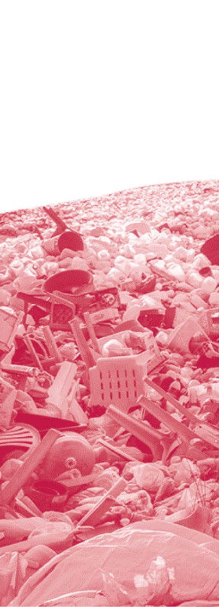
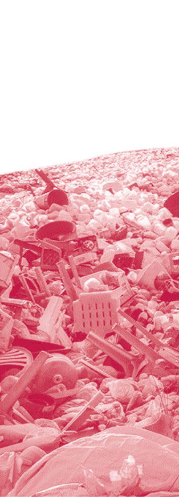
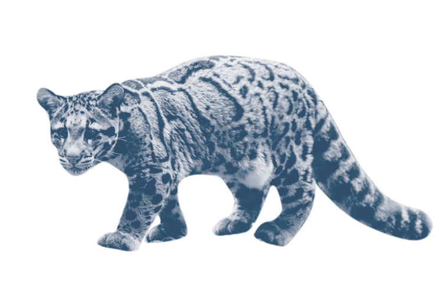
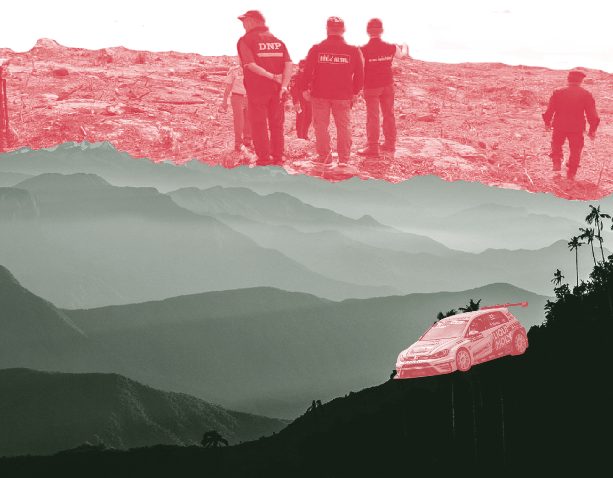
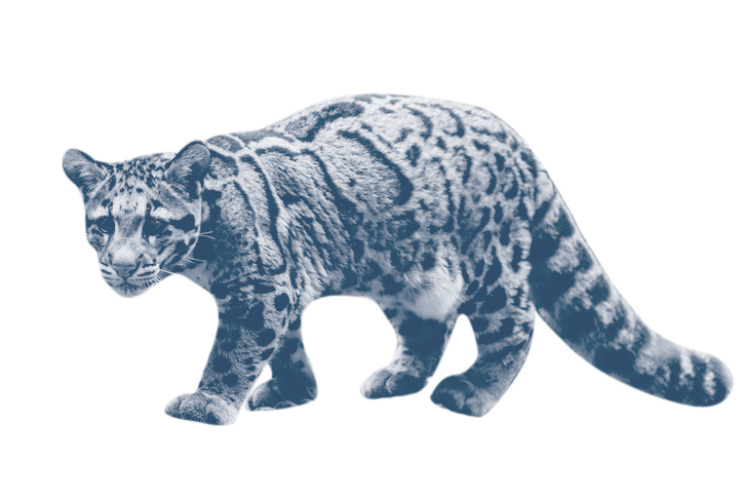
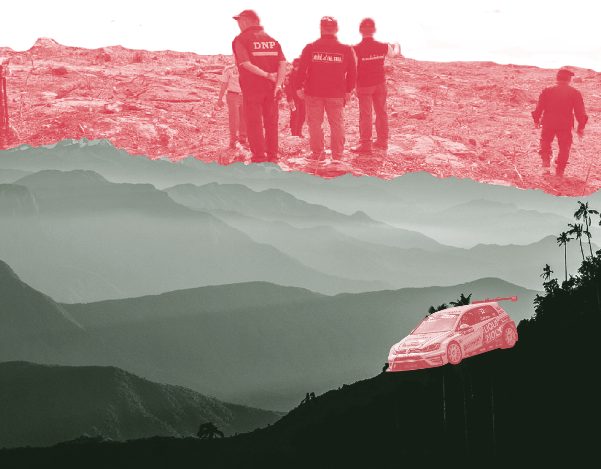
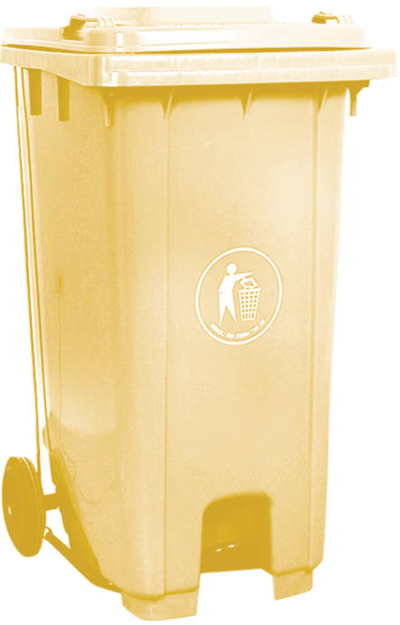
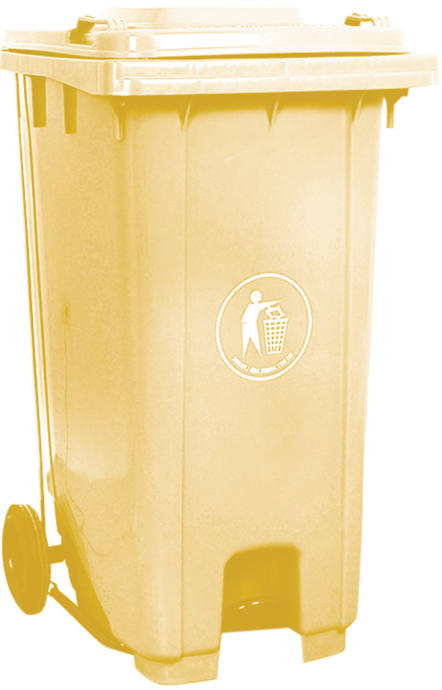

เพราะนักท่องเที่ยวที่มาเที่ยว
ขาดความรับผิดชอบ
 



 




การท่องเที่ยวเชิงอนุรักษ์
คือคำตอบ

แนวคิดการอนุรักษ์ธรรมชาติ
แนวคิดการเปลี่ยนแปลงการท่องเที่ยว

 



 สิ่งสำคัญที่ควรนึกถึงเมื่อมาเที่ยวที่อุทยานแห่งชาติเขาใหญ่
คือการรักษาความสวยงามของธรรมชาติโดยใช้วิธีการท่องเที่ยวแบบยั่งยืน
เพื่อให้ธรรมชาติอยู่กับเราจนถึงคนรุ่นหลังต่อไป
สิ่งสำคัญที่ควรนึกถึงเมื่อมาเที่ยวที่อุทยานแห่งชาติเขาใหญ่
คือการรักษาความสวยงามของธรรมชาติโดยใช้วิธีการท่องเที่ยวแบบยั่งยืน
เพื่อให้ธรรมชาติอยู่กับเราจนถึงคนรุ่นหลังต่อไป
BACK TO TOP